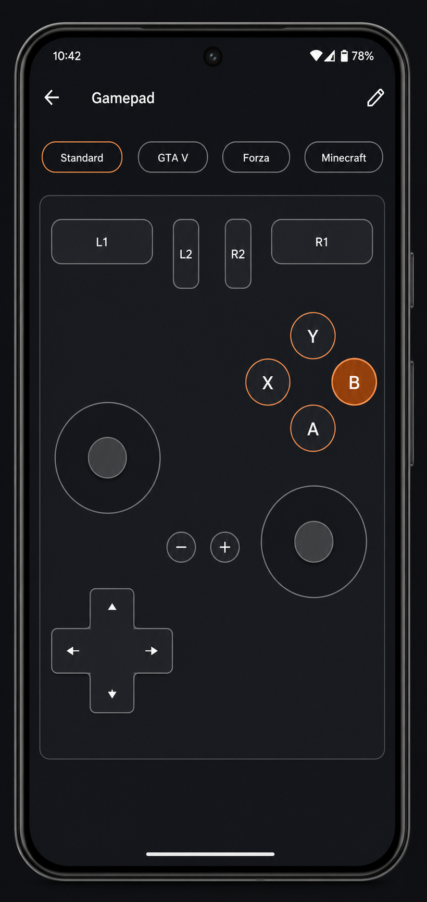

A controller that's honest about what it is
Elevon's gamepad is a genuine generic HID controller. Here's exactly what that means for your games — no overclaiming.
Two output modes
Gamepad mode sends real HID gamepad reports: 16 buttons, two sticks, an eight-way hat, analog triggers. Steam, SDL-based games, emulators and controller-aware titles pick it up like any no-name controller.
Keyboard & mouse mode maps the same on-screen controls to keys and mouse movement. This is the honest answer for games with no controller support at all — Minecraft Java included — and it works in every game, because every game supports keyboards.

Profiles for the way you play
Every profile stores its layout, dead zones, sensitivity and output mode. Editing is direct: flip the edit toggle, drag controls where your thumbs want them, resize with a slider. Presets cover common setups — and each preset says which output mode it uses and why:
| Preset | Output | Why |
|---|---|---|
| Standard | Gamepad | Controller-aware games, Steam titles, emulators |
| GTA V / action | Gamepad | Native controller support; use Steam Input for XInput-only builds |
| Forza / racing | Gamepad | Lower dead zone, higher sensitivity for steering |
| Minecraft (keyboard) | Keyboard & mouse | Java Edition has no controller support — keys and mouse-look solve it for real |
The limits, plainly
Not an Xbox controller Limited
Android doesn't let apps choose the Bluetooth vendor/product ID, so XInput impersonation is impossible. XInput-only games need Steam Input or in-game remapping. This is a platform wall, not a roadmap item.
Console support: no Limited
Game consoles authenticate controllers cryptographically. A phone cannot present itself as one. Elevon doesn't support consoles and doesn't promise to.
macOS gamepads Limited
Apple's GameController framework filters to known controllers, so a generic HID pad is invisible to it. Steam, emulators, SDL games and browsers see it fine.
Phone support varies Limited
The HID Device profile needs the phone maker to have enabled it. Most have. Elevon detects and tells you before you waste a minute.